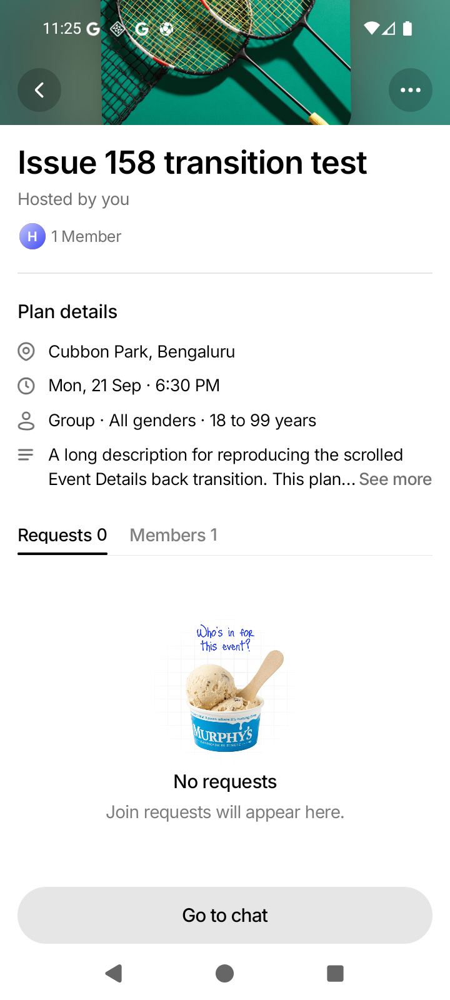
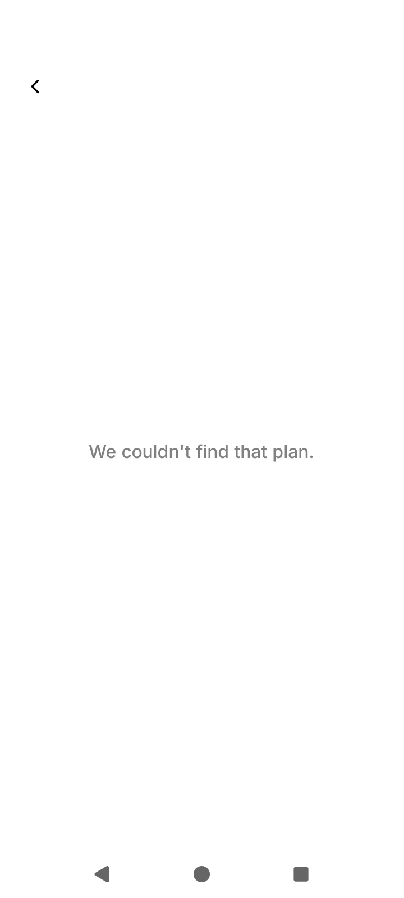
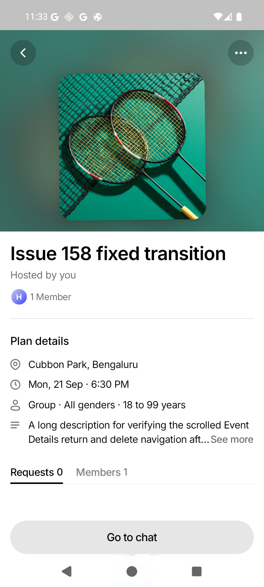
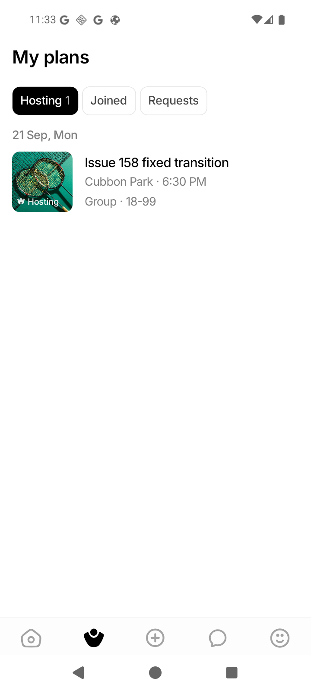
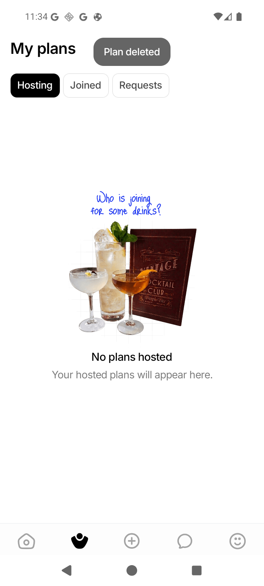

Deleting a card-origin plan returns to its source tab and shows the existing Plan deleted confirmation.
Executive summary
Outcome
Issue #158 was reproduced and fixed on the Android WEIF_API_36 emulator.
Both affected navigation paths now preserve a coherent shared-cover transition.
Event Details no longer switches to the missing-plan fallback while delete navigation is still in progress.
Back from a scrolled page restores the hero geometry before starting the shared return to the source card.
Observed failure
Reproduction
- Device
- Android API 36 emulator
- AVD
- WEIF_API_36 · 720 × 1600
- Backend
- Local Go server with dev-login
- Client
- Expo development client + local Metro
Steps
- Open My Plans → Hosting.
- Open a hosted plan from its card.
- Scroll Event Details and press Back.
- Open the plan again, choose More actions → Delete plan, and confirm.
The delete request succeeded, but the event disappeared from
EventsContext before the route reset completed. Event Details rendered
the missing-plan fallback and remained there.
Captured before the fix


Diagnosis
Root cause
Two assumptions required by the shared transition were being broken.
Ready content was tied to live collection state
deleteUserEvent refreshed the event collection before
handleDelete dispatched the navigation reset. The successful removal
therefore unmounted the detail content before the route itself was removed.
The return endpoint moved with scroll
A shared return re-measures the live hero cover. Once scrolled, that hero could be shifted or partly offscreen, invalidating the endpoint and forcing the rough fallback navigation transition.
Planned correction
Fix plan
- Preserve the last valid event snapshot for the lifetime of the route.
- Keep a successful delete on stable detail content until the existing navigation reset removes the route.
- On Back from a scrolled shared-cover route, restore the hero first and start the shared return after the scroll settles.
- Preserve reduced-motion behavior and guard repeated Back presses.
- Add a regression test and document the shared-transition convention.
- Run targeted tests, full validation, and the original emulator flows.
Completed changes
Implementation
The behavior change is localized to EventDetailsScreen, with one focused
rendering regression test and documentation updates.
-
lastReadyEventretains the most recent valid snapshot for the current route ID. A live context or fetch result still takes precedence; the retained value is only used when that row disappears before navigation removal. -
The Back action reads the existing Reanimated scroll offset. On a scrolled
shared-cover route, it scrolls to
y = 0, waits 320 ms for the native animated scroll to settle, then callsnavigation.goBack(). - The pending Back timer blocks duplicate taps and is cancelled when the component unmounts.
- Reduced-motion and non-shared routes retain their direct Back behavior.
-
The rendering suite now proves that removing the event from
EventsContextdoes not replace an already-ready route with the missing-plan fallback.
Emulator evidence
Verification
The original reproduction paths were repeated on the emulator after the change.



Quality gates
Automated validation
Full frontend suite
118 suites · 1,438 tests passed
Focused transition run
2 suites · 124 tests passed
TypeScriptnpm run typecheck passed
Lint
Passed with the existing baseline: 734 warnings, 0 errors
Formatting
Prettier passed for all touched files
Patch integritygit diff --check passed